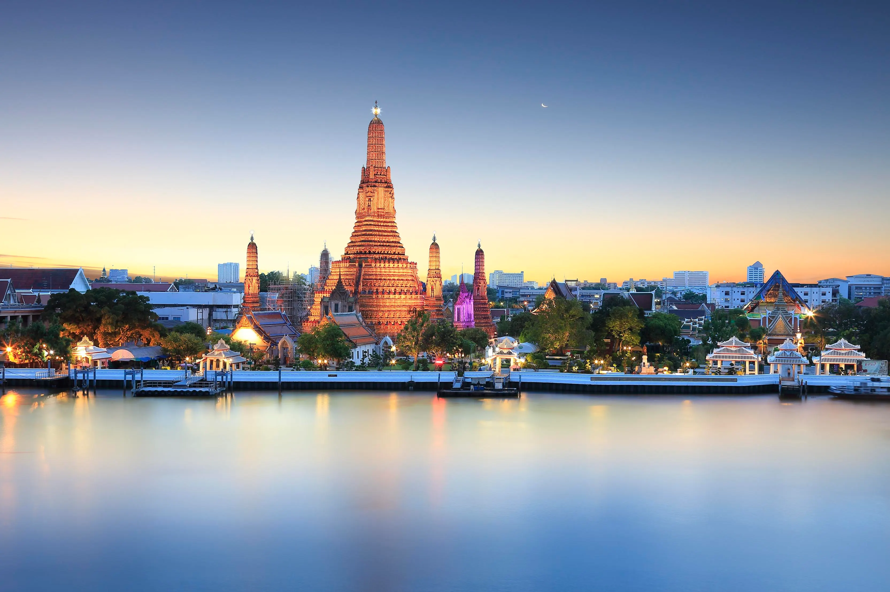

Qué ver y hacer en Tailandia
Las ciudades más populares de Tailandia son Bangkok, la capital del país, Chiang Mai, el epicentro cultural de Tailandia o Chiang Rai, donde se encuentra el templo Blanco, una auténtica joya arquitectónica.
Bangkok
Bangkok es la capital de Tailandia y uno de los destinos que no debe faltar en tu lista de destinos a descubrir en tu visita a este país del sudeste asiático. Esta gran urbe de 8,2 millones de habitantes es la ciudad más grande del país. En Bangkok descubrirás una ciudad de contrastes: podrás visitar desde los antiguos templos budistas –religión mayoritaria en Tailandia– hasta los más modernos rascacielos en su distrito financiero. Sus callejuelas te permitirán conocer la parte más auténtica de la ciudad y descubrir la vida de los locales.
Chiang Mai
Chiang Mai es el epicentro cultural de Tailandia. Una ciudad en la que podrás adentrarte en el pasado de Tailandia y descubrir el patrimonio cultural que se conserva actualmente a través de templos y monumentos. Esta ciudad es la más grande del norte de Tailandia, con una población de 132.000 habitantes. Prepárate para descubrir el templo de Doi Suthep, lugar de peregrinación para la población budista y uno de los templos más reconocidos de Chiang Mai. También te aconsejamos visitar el templo What Phra Singh o el templo Wat Chedi Luang, ubicado en pleno centro de la ciudad.

Phuket
Phuket es uno de los destinos de playa más famosos de Tailandia. Esta isla es perfecta para los viajeros que busquen un equilibrio entre el relax y el ocio. Durante el día, te esperan sus playas donde, además de descansar, podrás practicar deportes acuáticos y otras actividades. Por la noche, las opciones de ocio en Phuket son muy extensas. Patong Beach es uno de los destinos favoritos por los amantes de las fiestas, pero también para los que les apetezca ir de compras o disfrutar de un buen restaurante.
Krabi
Krabi es sinónimo de playas tranquilas, agradables e ideales para pasar unos días de relax en un entorno privilegiado. Las playas de la provincia de Krabi, en el sur de Tailandia, están ubicadas en el Mar de Andamán. En esta zona encontrarás desde largas playas con grandes extensiones de arena blanca hasta playas más pequeñas, solitarias y especialmente relajadas. Si buscas relax y conectar con la naturaleza Krabi puede ser el destino que necesitas.